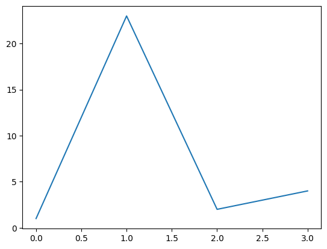
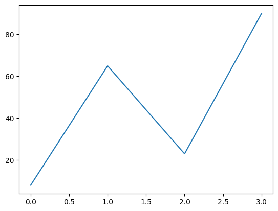

import torch
import numpy as npfile_name = "/Users/sayan/personal/sayan_github/dl-lecture-notes/docs/neural_network_and_deep_learning/rnn/data/input.txt"# data I/O
data = open(file_name, 'r').read()
chars = list(set(data))
data_size, vocab_size = len(data), len(chars)
print(f'data has {data_size} characters, {vocab_size} unique.')
char_to_ix = { ch:i for i,ch in enumerate(chars) }
ix_to_char = { i:ch for i,ch in enumerate(chars) }data has 1115394 characters, 65 unique.# hyperparameters
hidden_size = 100 # size of hidden layer of neurons
seq_length = 25 # number of steps to unroll the RNN for
learning_rate = 1e-1
# model parameters
Wxh = np.random.randn(hidden_size, vocab_size)*0.01 # input to hidden
Whh = np.random.randn(hidden_size, hidden_size)*0.01 # hidden to hidden
Why = np.random.randn(vocab_size, hidden_size)*0.01 # hidden to output
bh = np.zeros((hidden_size, 1)) # hidden bias
by = np.zeros((vocab_size, 1)) # output biasmy_test = {}
type(my_test)dictlinear_layer_1 = torch.nn.Linear(4,3)
for name, v in linear_layer_1.named_parameters():
print(name,v)
print(v.shape)weight Parameter containing:
tensor([[-0.3600, -0.4717, -0.4435, 0.4761],
[ 0.1459, 0.0818, 0.2433, -0.1609],
[ 0.2457, 0.1844, 0.0354, 0.4800]], requires_grad=True)
torch.Size([3, 4])
bias Parameter containing:
tensor([ 0.2351, -0.1275, 0.4702], requires_grad=True)
torch.Size([3])torch.rand(3,1).T @ linear_layer_1.weight tensor([[ 0.1020, -0.0508, -0.0655, 0.5761]], grad_fn=<MmBackward0>)N = 100 # number of points per class
D = 2 # dimensionality
K = 3 # number of classes
X = np.zeros((N*K,D)) # data matrix (each row = single example)
y = np.zeros(N*K, dtype='uint8') # class labels
for j in range(K):
ix = range(N*j,N*(j+1))
r = np.linspace(0.0,1,N) # radius
t = np.linspace(j*4,(j+1)*4,N) + np.random.randn(N)*0.2 # theta
X[ix] = np.c_[r*np.sin(t), r*np.cos(t)]
y[ix] = j
# lets visualize the data:X.shape, y.shape((300, 2), (300,))import pandas as pd
from sklearn.preprocessing import LabelEncoder, OneHotEncoder
from sklearn.model_selection import train_test_split
from sklearn.datasets import load_irisiris_data = load_iris(as_frame=True)
iris_data.keys()dict_keys(['data', 'target', 'frame', 'target_names', 'DESCR', 'feature_names', 'filename', 'data_module'])iris_data['data']| sepal length (cm) | sepal width (cm) | petal length (cm) | petal width (cm) | |
|---|---|---|---|---|
| 0 | 5.1 | 3.5 | 1.4 | 0.2 |
| 1 | 4.9 | 3.0 | 1.4 | 0.2 |
| 2 | 4.7 | 3.2 | 1.3 | 0.2 |
| 3 | 4.6 | 3.1 | 1.5 | 0.2 |
| 4 | 5.0 | 3.6 | 1.4 | 0.2 |
| ... | ... | ... | ... | ... |
| 145 | 6.7 | 3.0 | 5.2 | 2.3 |
| 146 | 6.3 | 2.5 | 5.0 | 1.9 |
| 147 | 6.5 | 3.0 | 5.2 | 2.0 |
| 148 | 6.2 | 3.4 | 5.4 | 2.3 |
| 149 | 5.9 | 3.0 | 5.1 | 1.8 |
150 rows × 4 columns
?train_test_splitSignature:
train_test_split(
*arrays,
test_size=None,
train_size=None,
random_state=None,
shuffle=True,
stratify=None,
)
Docstring:
Split arrays or matrices into random train and test subsets.
Quick utility that wraps input validation,
``next(ShuffleSplit().split(X, y))``, and application to input data
into a single call for splitting (and optionally subsampling) data into a
one-liner.
Read more in the :ref:`User Guide <cross_validation>`.
Parameters
----------
*arrays : sequence of indexables with same length / shape[0]
Allowed inputs are lists, numpy arrays, scipy-sparse
matrices or pandas dataframes.
test_size : float or int, default=None
If float, should be between 0.0 and 1.0 and represent the proportion
of the dataset to include in the test split. If int, represents the
absolute number of test samples. If None, the value is set to the
complement of the train size. If ``train_size`` is also None, it will
be set to 0.25.
train_size : float or int, default=None
If float, should be between 0.0 and 1.0 and represent the
proportion of the dataset to include in the train split. If
int, represents the absolute number of train samples. If None,
the value is automatically set to the complement of the test size.
random_state : int, RandomState instance or None, default=None
Controls the shuffling applied to the data before applying the split.
Pass an int for reproducible output across multiple function calls.
See :term:`Glossary <random_state>`.
shuffle : bool, default=True
Whether or not to shuffle the data before splitting. If shuffle=False
then stratify must be None.
stratify : array-like, default=None
If not None, data is split in a stratified fashion, using this as
the class labels.
Read more in the :ref:`User Guide <stratification>`.
Returns
-------
splitting : list, length=2 * len(arrays)
List containing train-test split of inputs.
.. versionadded:: 0.16
If the input is sparse, the output will be a
``scipy.sparse.csr_matrix``. Else, output type is the same as the
input type.
Examples
--------
>>> import numpy as np
>>> from sklearn.model_selection import train_test_split
>>> X, y = np.arange(10).reshape((5, 2)), range(5)
>>> X
array([[0, 1],
[2, 3],
[4, 5],
[6, 7],
[8, 9]])
>>> list(y)
[0, 1, 2, 3, 4]
>>> X_train, X_test, y_train, y_test = train_test_split(
... X, y, test_size=0.33, random_state=42)
...
>>> X_train
array([[4, 5],
[0, 1],
[6, 7]])
>>> y_train
[2, 0, 3]
>>> X_test
array([[2, 3],
[8, 9]])
>>> y_test
[1, 4]
>>> train_test_split(y, shuffle=False)
[[0, 1, 2], [3, 4]]
File: ~/personal/sayan_github/dl-lecture-notes/.venv/lib/python3.12/site-packages/sklearn/model_selection/_split.py
Type: functionfrom sklearn.linear_model import LogisticRegression?LogisticRegressionInit signature:
LogisticRegression(
penalty='l2',
*,
dual=False,
tol=0.0001,
C=1.0,
fit_intercept=True,
intercept_scaling=1,
class_weight=None,
random_state=None,
solver='lbfgs',
max_iter=100,
multi_class='deprecated',
verbose=0,
warm_start=False,
n_jobs=None,
l1_ratio=None,
)
Docstring:
Logistic Regression (aka logit, MaxEnt) classifier.
In the multiclass case, the training algorithm uses the one-vs-rest (OvR)
scheme if the 'multi_class' option is set to 'ovr', and uses the
cross-entropy loss if the 'multi_class' option is set to 'multinomial'.
(Currently the 'multinomial' option is supported only by the 'lbfgs',
'sag', 'saga' and 'newton-cg' solvers.)
This class implements regularized logistic regression using the
'liblinear' library, 'newton-cg', 'sag', 'saga' and 'lbfgs' solvers. **Note
that regularization is applied by default**. It can handle both dense
and sparse input. Use C-ordered arrays or CSR matrices containing 64-bit
floats for optimal performance; any other input format will be converted
(and copied).
The 'newton-cg', 'sag', and 'lbfgs' solvers support only L2 regularization
with primal formulation, or no regularization. The 'liblinear' solver
supports both L1 and L2 regularization, with a dual formulation only for
the L2 penalty. The Elastic-Net regularization is only supported by the
'saga' solver.
Read more in the :ref:`User Guide <logistic_regression>`.
Parameters
----------
penalty : {'l1', 'l2', 'elasticnet', None}, default='l2'
Specify the norm of the penalty:
- `None`: no penalty is added;
- `'l2'`: add a L2 penalty term and it is the default choice;
- `'l1'`: add a L1 penalty term;
- `'elasticnet'`: both L1 and L2 penalty terms are added.
.. warning::
Some penalties may not work with some solvers. See the parameter
`solver` below, to know the compatibility between the penalty and
solver.
.. versionadded:: 0.19
l1 penalty with SAGA solver (allowing 'multinomial' + L1)
dual : bool, default=False
Dual (constrained) or primal (regularized, see also
:ref:`this equation <regularized-logistic-loss>`) formulation. Dual formulation
is only implemented for l2 penalty with liblinear solver. Prefer dual=False when
n_samples > n_features.
tol : float, default=1e-4
Tolerance for stopping criteria.
C : float, default=1.0
Inverse of regularization strength; must be a positive float.
Like in support vector machines, smaller values specify stronger
regularization.
fit_intercept : bool, default=True
Specifies if a constant (a.k.a. bias or intercept) should be
added to the decision function.
intercept_scaling : float, default=1
Useful only when the solver 'liblinear' is used
and self.fit_intercept is set to True. In this case, x becomes
[x, self.intercept_scaling],
i.e. a "synthetic" feature with constant value equal to
intercept_scaling is appended to the instance vector.
The intercept becomes ``intercept_scaling * synthetic_feature_weight``.
Note! the synthetic feature weight is subject to l1/l2 regularization
as all other features.
To lessen the effect of regularization on synthetic feature weight
(and therefore on the intercept) intercept_scaling has to be increased.
class_weight : dict or 'balanced', default=None
Weights associated with classes in the form ``{class_label: weight}``.
If not given, all classes are supposed to have weight one.
The "balanced" mode uses the values of y to automatically adjust
weights inversely proportional to class frequencies in the input data
as ``n_samples / (n_classes * np.bincount(y))``.
Note that these weights will be multiplied with sample_weight (passed
through the fit method) if sample_weight is specified.
.. versionadded:: 0.17
*class_weight='balanced'*
random_state : int, RandomState instance, default=None
Used when ``solver`` == 'sag', 'saga' or 'liblinear' to shuffle the
data. See :term:`Glossary <random_state>` for details.
solver : {'lbfgs', 'liblinear', 'newton-cg', 'newton-cholesky', 'sag', 'saga'}, default='lbfgs'
Algorithm to use in the optimization problem. Default is 'lbfgs'.
To choose a solver, you might want to consider the following aspects:
- For small datasets, 'liblinear' is a good choice, whereas 'sag'
and 'saga' are faster for large ones;
- For multiclass problems, only 'newton-cg', 'sag', 'saga' and
'lbfgs' handle multinomial loss;
- 'liblinear' and 'newton-cholesky' can only handle binary classification
by default. To apply a one-versus-rest scheme for the multiclass setting
one can wrapt it with the `OneVsRestClassifier`.
- 'newton-cholesky' is a good choice for `n_samples` >> `n_features`,
especially with one-hot encoded categorical features with rare
categories. Be aware that the memory usage of this solver has a quadratic
dependency on `n_features` because it explicitly computes the Hessian
matrix.
.. warning::
The choice of the algorithm depends on the penalty chosen and on
(multinomial) multiclass support:
================= ============================== ======================
solver penalty multinomial multiclass
================= ============================== ======================
'lbfgs' 'l2', None yes
'liblinear' 'l1', 'l2' no
'newton-cg' 'l2', None yes
'newton-cholesky' 'l2', None no
'sag' 'l2', None yes
'saga' 'elasticnet', 'l1', 'l2', None yes
================= ============================== ======================
.. note::
'sag' and 'saga' fast convergence is only guaranteed on features
with approximately the same scale. You can preprocess the data with
a scaler from :mod:`sklearn.preprocessing`.
.. seealso::
Refer to the User Guide for more information regarding
:class:`LogisticRegression` and more specifically the
:ref:`Table <Logistic_regression>`
summarizing solver/penalty supports.
.. versionadded:: 0.17
Stochastic Average Gradient descent solver.
.. versionadded:: 0.19
SAGA solver.
.. versionchanged:: 0.22
The default solver changed from 'liblinear' to 'lbfgs' in 0.22.
.. versionadded:: 1.2
newton-cholesky solver.
max_iter : int, default=100
Maximum number of iterations taken for the solvers to converge.
multi_class : {'auto', 'ovr', 'multinomial'}, default='auto'
If the option chosen is 'ovr', then a binary problem is fit for each
label. For 'multinomial' the loss minimised is the multinomial loss fit
across the entire probability distribution, *even when the data is
binary*. 'multinomial' is unavailable when solver='liblinear'.
'auto' selects 'ovr' if the data is binary, or if solver='liblinear',
and otherwise selects 'multinomial'.
.. versionadded:: 0.18
Stochastic Average Gradient descent solver for 'multinomial' case.
.. versionchanged:: 0.22
Default changed from 'ovr' to 'auto' in 0.22.
.. deprecated:: 1.5
``multi_class`` was deprecated in version 1.5 and will be removed in 1.7.
From then on, the recommended 'multinomial' will always be used for
`n_classes >= 3`.
Solvers that do not support 'multinomial' will raise an error.
Use `sklearn.multiclass.OneVsRestClassifier(LogisticRegression())` if you
still want to use OvR.
verbose : int, default=0
For the liblinear and lbfgs solvers set verbose to any positive
number for verbosity.
warm_start : bool, default=False
When set to True, reuse the solution of the previous call to fit as
initialization, otherwise, just erase the previous solution.
Useless for liblinear solver. See :term:`the Glossary <warm_start>`.
.. versionadded:: 0.17
*warm_start* to support *lbfgs*, *newton-cg*, *sag*, *saga* solvers.
n_jobs : int, default=None
Number of CPU cores used when parallelizing over classes if
multi_class='ovr'". This parameter is ignored when the ``solver`` is
set to 'liblinear' regardless of whether 'multi_class' is specified or
not. ``None`` means 1 unless in a :obj:`joblib.parallel_backend`
context. ``-1`` means using all processors.
See :term:`Glossary <n_jobs>` for more details.
l1_ratio : float, default=None
The Elastic-Net mixing parameter, with ``0 <= l1_ratio <= 1``. Only
used if ``penalty='elasticnet'``. Setting ``l1_ratio=0`` is equivalent
to using ``penalty='l2'``, while setting ``l1_ratio=1`` is equivalent
to using ``penalty='l1'``. For ``0 < l1_ratio <1``, the penalty is a
combination of L1 and L2.
Attributes
----------
classes_ : ndarray of shape (n_classes, )
A list of class labels known to the classifier.
coef_ : ndarray of shape (1, n_features) or (n_classes, n_features)
Coefficient of the features in the decision function.
`coef_` is of shape (1, n_features) when the given problem is binary.
In particular, when `multi_class='multinomial'`, `coef_` corresponds
to outcome 1 (True) and `-coef_` corresponds to outcome 0 (False).
intercept_ : ndarray of shape (1,) or (n_classes,)
Intercept (a.k.a. bias) added to the decision function.
If `fit_intercept` is set to False, the intercept is set to zero.
`intercept_` is of shape (1,) when the given problem is binary.
In particular, when `multi_class='multinomial'`, `intercept_`
corresponds to outcome 1 (True) and `-intercept_` corresponds to
outcome 0 (False).
n_features_in_ : int
Number of features seen during :term:`fit`.
.. versionadded:: 0.24
feature_names_in_ : ndarray of shape (`n_features_in_`,)
Names of features seen during :term:`fit`. Defined only when `X`
has feature names that are all strings.
.. versionadded:: 1.0
n_iter_ : ndarray of shape (n_classes,) or (1, )
Actual number of iterations for all classes. If binary or multinomial,
it returns only 1 element. For liblinear solver, only the maximum
number of iteration across all classes is given.
.. versionchanged:: 0.20
In SciPy <= 1.0.0 the number of lbfgs iterations may exceed
``max_iter``. ``n_iter_`` will now report at most ``max_iter``.
See Also
--------
SGDClassifier : Incrementally trained logistic regression (when given
the parameter ``loss="log_loss"``).
LogisticRegressionCV : Logistic regression with built-in cross validation.
Notes
-----
The underlying C implementation uses a random number generator to
select features when fitting the model. It is thus not uncommon,
to have slightly different results for the same input data. If
that happens, try with a smaller tol parameter.
Predict output may not match that of standalone liblinear in certain
cases. See :ref:`differences from liblinear <liblinear_differences>`
in the narrative documentation.
References
----------
L-BFGS-B -- Software for Large-scale Bound-constrained Optimization
Ciyou Zhu, Richard Byrd, Jorge Nocedal and Jose Luis Morales.
http://users.iems.northwestern.edu/~nocedal/lbfgsb.html
LIBLINEAR -- A Library for Large Linear Classification
https://www.csie.ntu.edu.tw/~cjlin/liblinear/
SAG -- Mark Schmidt, Nicolas Le Roux, and Francis Bach
Minimizing Finite Sums with the Stochastic Average Gradient
https://hal.inria.fr/hal-00860051/document
SAGA -- Defazio, A., Bach F. & Lacoste-Julien S. (2014).
:arxiv:`"SAGA: A Fast Incremental Gradient Method With Support
for Non-Strongly Convex Composite Objectives" <1407.0202>`
Hsiang-Fu Yu, Fang-Lan Huang, Chih-Jen Lin (2011). Dual coordinate descent
methods for logistic regression and maximum entropy models.
Machine Learning 85(1-2):41-75.
https://www.csie.ntu.edu.tw/~cjlin/papers/maxent_dual.pdf
Examples
--------
>>> from sklearn.datasets import load_iris
>>> from sklearn.linear_model import LogisticRegression
>>> X, y = load_iris(return_X_y=True)
>>> clf = LogisticRegression(random_state=0).fit(X, y)
>>> clf.predict(X[:2, :])
array([0, 0])
>>> clf.predict_proba(X[:2, :])
array([[9.8...e-01, 1.8...e-02, 1.4...e-08],
[9.7...e-01, 2.8...e-02, ...e-08]])
>>> clf.score(X, y)
0.97...
File: ~/personal/sayan_github/dl-lecture-notes/.venv/lib/python3.12/site-packages/sklearn/linear_model/_logistic.py
Type: type
Subclasses: LogisticRegressionCVX, y = load_iris(return_X_y=True)#y
from sklearn.datasets import make_friedman3?make_friedman3Signature: make_friedman3(n_samples=100, *, noise=0.0, random_state=None)
Docstring:
Generate the "Friedman #3" regression problem.
This dataset is described in Friedman [1] and Breiman [2].
Inputs `X` are 4 independent features uniformly distributed on the
intervals::
0 <= X[:, 0] <= 100,
40 * pi <= X[:, 1] <= 560 * pi,
0 <= X[:, 2] <= 1,
1 <= X[:, 3] <= 11.
The output `y` is created according to the formula::
y(X) = arctan((X[:, 1] * X[:, 2] - 1 / (X[:, 1] * X[:, 3])) / X[:, 0]) + noise * N(0, 1).
Read more in the :ref:`User Guide <sample_generators>`.
Parameters
----------
n_samples : int, default=100
The number of samples.
noise : float, default=0.0
The standard deviation of the gaussian noise applied to the output.
random_state : int, RandomState instance or None, default=None
Determines random number generation for dataset noise. Pass an int
for reproducible output across multiple function calls.
See :term:`Glossary <random_state>`.
Returns
-------
X : ndarray of shape (n_samples, 4)
The input samples.
y : ndarray of shape (n_samples,)
The output values.
References
----------
.. [1] J. Friedman, "Multivariate adaptive regression splines", The Annals
of Statistics 19 (1), pages 1-67, 1991.
.. [2] L. Breiman, "Bagging predictors", Machine Learning 24,
pages 123-140, 1996.
Examples
--------
>>> from sklearn.datasets import make_friedman3
>>> X, y = make_friedman3(random_state=42)
>>> X.shape
(100, 4)
>>> y.shape
(100,)
>>> list(y[:3])
[np.float64(1.5...), np.float64(0.9...), np.float64(0.4...)]
File: ~/personal/sayan_github/dl-lecture-notes/.venv/lib/python3.12/site-packages/sklearn/datasets/_samples_generator.py
Type: functionfrom torch.optim import AdamW
?AdamWInit signature:
AdamW(
params: Union[Iterable[torch.Tensor], Iterable[Dict[str, Any]]],
lr: Union[float, torch.Tensor] = 0.001,
betas: Tuple[float, float] = (0.9, 0.999),
eps: float = 1e-08,
weight_decay: float = 0.01,
amsgrad: bool = False,
*,
maximize: bool = False,
foreach: Optional[bool] = None,
capturable: bool = False,
differentiable: bool = False,
fused: Optional[bool] = None,
)
Docstring:
Implements AdamW algorithm.
.. math::
\begin{aligned}
&\rule{110mm}{0.4pt} \\
&\textbf{input} : \gamma \text{(lr)}, \: \beta_1, \beta_2
\text{(betas)}, \: \theta_0 \text{(params)}, \: f(\theta) \text{(objective)},
\: \epsilon \text{ (epsilon)} \\
&\hspace{13mm} \lambda \text{(weight decay)}, \: \textit{amsgrad},
\: \textit{maximize} \\
&\textbf{initialize} : m_0 \leftarrow 0 \text{ (first moment)}, v_0 \leftarrow 0
\text{ ( second moment)}, \: \widehat{v_0}^{max}\leftarrow 0 \\[-1.ex]
&\rule{110mm}{0.4pt} \\
&\textbf{for} \: t=1 \: \textbf{to} \: \ldots \: \textbf{do} \\
&\hspace{5mm}\textbf{if} \: \textit{maximize}: \\
&\hspace{10mm}g_t \leftarrow -\nabla_{\theta} f_t (\theta_{t-1}) \\
&\hspace{5mm}\textbf{else} \\
&\hspace{10mm}g_t \leftarrow \nabla_{\theta} f_t (\theta_{t-1}) \\
&\hspace{5mm} \theta_t \leftarrow \theta_{t-1} - \gamma \lambda \theta_{t-1} \\
&\hspace{5mm}m_t \leftarrow \beta_1 m_{t-1} + (1 - \beta_1) g_t \\
&\hspace{5mm}v_t \leftarrow \beta_2 v_{t-1} + (1-\beta_2) g^2_t \\
&\hspace{5mm}\widehat{m_t} \leftarrow m_t/\big(1-\beta_1^t \big) \\
&\hspace{5mm}\widehat{v_t} \leftarrow v_t/\big(1-\beta_2^t \big) \\
&\hspace{5mm}\textbf{if} \: amsgrad \\
&\hspace{10mm}\widehat{v_t}^{max} \leftarrow \mathrm{max}(\widehat{v_t}^{max},
\widehat{v_t}) \\
&\hspace{10mm}\theta_t \leftarrow \theta_t - \gamma \widehat{m_t}/
\big(\sqrt{\widehat{v_t}^{max}} + \epsilon \big) \\
&\hspace{5mm}\textbf{else} \\
&\hspace{10mm}\theta_t \leftarrow \theta_t - \gamma \widehat{m_t}/
\big(\sqrt{\widehat{v_t}} + \epsilon \big) \\
&\rule{110mm}{0.4pt} \\[-1.ex]
&\bf{return} \: \theta_t \\[-1.ex]
&\rule{110mm}{0.4pt} \\[-1.ex]
\end{aligned}
For further details regarding the algorithm we refer to `Decoupled Weight Decay Regularization`_.
Args:
params (iterable): iterable of parameters to optimize or dicts defining
parameter groups
lr (float, Tensor, optional): learning rate (default: 1e-3). A tensor LR
is not yet supported for all our implementations. Please use a float
LR if you are not also specifying fused=True or capturable=True.
betas (Tuple[float, float], optional): coefficients used for computing
running averages of gradient and its square (default: (0.9, 0.999))
eps (float, optional): term added to the denominator to improve
numerical stability (default: 1e-8)
weight_decay (float, optional): weight decay coefficient (default: 1e-2)
amsgrad (bool, optional): whether to use the AMSGrad variant of this
algorithm from the paper `On the Convergence of Adam and Beyond`_
(default: False)
maximize (bool, optional): maximize the objective with respect to the
params, instead of minimizing (default: False)
foreach (bool, optional): whether foreach implementation of optimizer
is used. If unspecified by the user (so foreach is None), we will try to use
foreach over the for-loop implementation on CUDA, since it is usually
significantly more performant. Note that the foreach implementation uses
~ sizeof(params) more peak memory than the for-loop version due to the intermediates
being a tensorlist vs just one tensor. If memory is prohibitive, batch fewer
parameters through the optimizer at a time or switch this flag to False (default: None)
capturable (bool, optional): whether this instance is safe to
capture in a CUDA graph. Passing True can impair ungraphed performance,
so if you don't intend to graph capture this instance, leave it False
(default: False)
differentiable (bool, optional): whether autograd should
occur through the optimizer step in training. Otherwise, the step()
function runs in a torch.no_grad() context. Setting to True can impair
performance, so leave it False if you don't intend to run autograd
through this instance (default: False)
fused (bool, optional): whether the fused implementation is used.
Currently, `torch.float64`, `torch.float32`, `torch.float16`, and `torch.bfloat16`
are supported. (default: None)
.. note:: The foreach and fused implementations are typically faster than the for-loop,
single-tensor implementation, with fused being theoretically fastest with both
vertical and horizontal fusion. As such, if the user has not specified either
flag (i.e., when foreach = fused = None), we will attempt defaulting to the foreach
implementation when the tensors are all on CUDA. Why not fused? Since the fused
implementation is relatively new, we want to give it sufficient bake-in time.
To specify fused, pass True for fused. To force running the for-loop
implementation, pass False for either foreach or fused.
.. Note::
A prototype implementation of Adam and AdamW for MPS supports `torch.float32` and `torch.float16`.
.. _Decoupled Weight Decay Regularization:
https://arxiv.org/abs/1711.05101
.. _On the Convergence of Adam and Beyond:
https://openreview.net/forum?id=ryQu7f-RZ
File: ~/personal/sayan_github/dl-lecture-notes/.venv/lib/python3.12/site-packages/torch/optim/adamw.py
Type: type
Subclasses: import matplotlib.pyplot as plt
plt.plot([1,23,2,4])
plt.show()
plt.plot([8,65,23,90])
plt.show()

import torch.nn as nnrnn = nn.LSTM(10, 20, 2)
input = torch.randn(5, 3, 10)
h0 = torch.randn(2, 3, 20)
c0 = torch.randn(2, 3, 20)
output, (hn, cn) = rnn(input, (h0, c0))#outputrnn_names = []
for n, p in rnn.named_parameters():
rnn_names.append(n)
#print(f"n:{n}, p:{p}")rnn_names['weight_ih_l0',
'weight_hh_l0',
'bias_ih_l0',
'bias_hh_l0',
'weight_ih_l1',
'weight_hh_l1',
'bias_ih_l1',
'bias_hh_l1']tessaaaaaaaaafgz = nn.LSTMCell(10, 20)
lstm_names = []
for n, p in test.named_parameters():
lstm_names.append(n)lstm_names['weight_ih', 'weight_hh', 'bias_ih', 'bias_hh']linear_layer = nn.Linear(5,3)linear_layer.biasParameter containing:
tensor([ 0.3019, -0.1440, 0.0632], requires_grad=True)